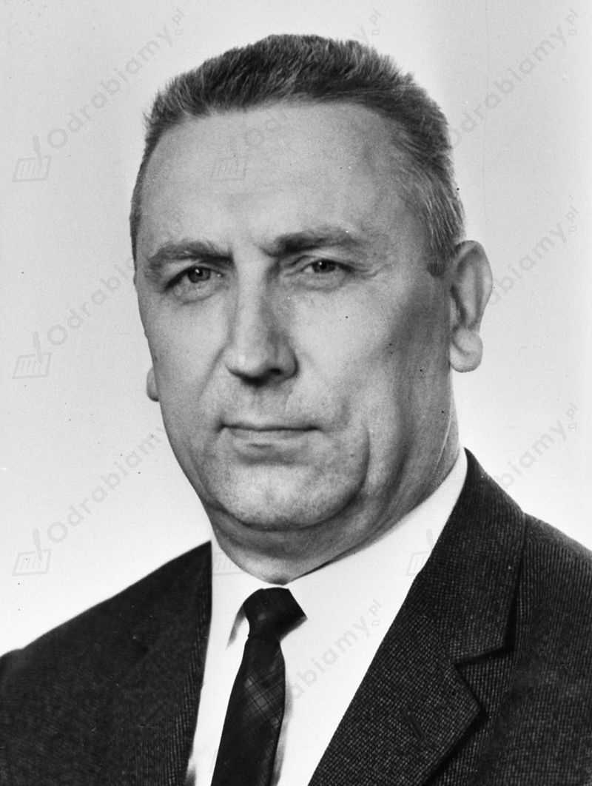
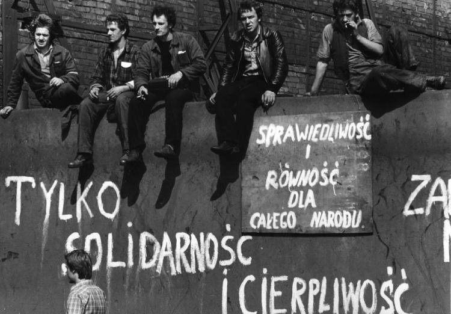
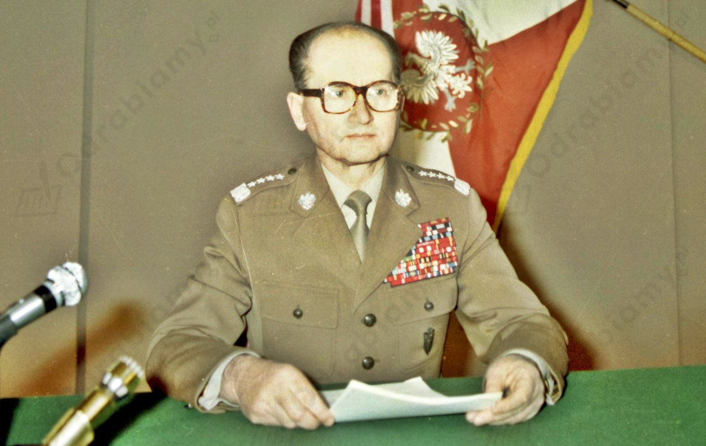

?
1) Przykładowa ocena:
Polsce nie groziła interwencja wojsk Układu Warszawskiego w grudniu 1981 r., ponieważ (przykładowe argumenty):
- ewentualna interwencja mogła spowodować olbrzymie koszty polityczne i finansowe dla ZSRS (np. zerwanie przez USA kontaktów handlowych z ZSRS),
- interwencja w PRL była ostatecznością dla ZSRS,
- sowieckie kręgi decyzyjne zdawały sobie sprawę, że skala oporu w Polsce jest ogromna i uwikłanie się w te sprawy, będzie dla ZSRS problematyczne i pociągnie za sobą wiele ofiar (Sowieci byli zaangażowaniu w wojnę w Afganistanie),
- stan wojenny był "mniejszym złem",
- na Moskwę intensywnie naciskali zarówno Ronald Regan jak i Jan Paweł II,
- wśród teoretycznych sojuszników w układzie nie było całkowitej jedności co do interwencji.
2) Potencjalne konsekwencje interwencji sił Układu Warszawskiego to np.:
- znaczny opór społeczny ze strony Polaków,
- wiele ofiar,
- konieczność rozproszenia sił przez ZSRS (w tym czasie trwał konflikt w Afganistanie),
- skomplikowanie położenia ZSRS na arenie międzynarodowej (wzrost napięć na linii ZSRS-USA).
Zadanie 1
| Największe strajki robotnicze w okresie PRL i ich skutki |
| Strajki robotnicze |
Skutki |
| 1956 r. (Poznański czerwiec) |
- śmierć ponad 70 osób,
- 700 osób zostało aresztowanych.
- zaostrzenie walk wewnętrznych w PZPR,
- wzrost liczby protestów organizowanych za granicą,
- zmiany w strukturach partii - I sekretarzem KC PZPR zostaje Władysław Gomułka,
- zaprzestanie stalinowskiego terroru,
- usunięcie doradców sowieckich ze służby bezpieczeństwa i wojska,
- zniesienie Komitetu ds. Bezpieczeństwa Publicznego,
- uwolnienie prymasa Stefana Wyszyńskiego,
- przywrócenie religii w szkołach,
- osłabienie nacisków politycznych w sferze kultury.
|
| 1970 r. (Grudzień 1970 r.) |
- w wyniku wydarzeń na Wybrzeżu zginęło 45 osób, a 1165 zostało rannych,
- uczestnicy protestów byli zwalniani z pracy i represjonowani,
- nastąpiły zmiany w kierownictwie partii - Gomułka został odsunięty od władzy, a stanowisko I sekretarza KC PZPR objął Edward Gierek.
|
| 1976 r. (wystąpienia w Radomiu, Ursusie i Płocku) |
- wystąpienia robotnicze w Radomiu, Ursusie i Płocku zostały brutalnie stłumione przez milicję oraz ZOMO,
- wiele osób aresztowano, a zatrzymanych bito. Słynne stały się tzw. ścieżki zdrowia,
- robotnicy, którzy brali udział w demonstracjach byli szykanowani i zwalniani z pracy,
- represje wobec protestujących spowodowały powstanie Komitetu Obrony Robotników (KOR) z Jackiem Kuroniem, Janem Lityńskim i Janem Józefem Lipskim na czele. Udział w pracach KOR-u brali również: Antoni Macierewicz, Adam Michnik i Zbigniew Romaszewski,
- po raz pierwszy w powojennej historii doszło do sojuszu inteligencji z robotnikami,
- aby w przyszłości uniknąć zamieszek, po wydarzeniach Czerwca 1976 r. władze wprowadziły tzw. ciche podwyżki.
|
| 1980 r. (Sierpień 1980 r.) |
- powołanie Międzyzakładowego Komitetu Strajkowego (MKS),
- sformułowanie przez strajkujących robotników 21 postulatów o charakterze polityczno-ekonomicznym,
- zgoda władz na utworzenie niezależnych związków zawodowych,
- zgoda władz na: prawo do strajku, wolność słowa, zwolnienie więźniów politycznych,
- utrata władzy przez Edwarda Gierka, na jego następcę wybrano Stanisława Kanię.
|
Zadanie 2
Do narodzin opozycji politycznej w PRL doszło w latach 60. XX wieku. Wówczas zaczęły tworzyć się pierwsze zalążki organizacji opozycyjnych. Wywodziły się one po części z dawnych członków PZPR, którzy widzieli potrzebę przeprowadzenia reform ekonomicznych i politycznych, ale w ramach istniejącego systemu.
Jednakże to wydarzenia w II połowie lat 70. wpłynęły na intensywniejsze tworzenie się opozycji. Wynikało to ze zmiany w konstytucji polegające na uznaniu PZPR za przewodnią siłę polityczną w Polsce. Do ustawy zasadniczej dodano także fragmenty o umacnianiu przyjaźni i współpracy z ZSRR. Oba fragmenty wywołały protesty środowisk opozycyjnych i Kościoła. Ponadto doszło do strajków w 1976 roku. Z pomocą represjonowanym nadeszli działacze opozycji - Kuroń, Lipski, Lityński. Utworzyli oni w 1976 r. Komitet Obrony Robotników. KOR składał się z ludzi o zróżnicowanych poglądach i dlatego wśród jego działaczy doszło do sporów. Doprowadziło to do powstania nowych ośrodków opozycyjnych. W 1977 r. powołano Ruch Obrony Praw Człowieka i Obywatela z Andrzejem Czumą i Leszkiem Moczulskim na czele. Ten ostatni w 1979 r. utworzył Konfederację Polski Niepodległej. Na Górnym Śląsku Kazimierz Świtoń założył Wolne Związki Zawodowe. Ten sam pomysł realizowali na Wybrzeżu np. Andrzej Gwiazda. Aleksander Hall w Gdańsku powołał Ruch Młodej Polski.
Zadanie 3
Ekipa Edwarda Gierka obejmując władzę postawiła sobie dwa główne cele w zakresie gospodarki:
- podniesienie stopy życiowej polskiego społeczeństwa (dobrobyt),
- modernizacja i unowocześnienie polskiej gospodarki.
W 1971 r. zorganizowano VI Zjazd PZPR pod hasłem: "Aby Polska rosła w siłę, a ludziom żyło się dostatniej". Zakładano, że w ciągu 5-lat dochód państwa wzrośnie o 18%. Realizując te założenia ekipa Gierka zaciągnęła ogromne kredyty w zachodnich bankach komercyjnych z przeznaczeniem na zakup licencji mających unowocześnić polską gospodarkę i budowę nowych zakładów przemysłowych. Zyski ze sprzedaży wyprodukowanych towarów zamierzano przeznaczyć na spłatę zadłużenia. W sumie zakupiono 377 licencji (np. na Coca Colę, Malboro, Fiata 126 p, sztucery myśliwskie i autobusy niskopodłogowe). Jerzy Olszewski (minister handlu zagranicznego i gospodarki morskiej) mawiał: "Niech się martwią ci, którzy pożyczają, a nie ci, którzy biorą". W konsekwencji większość licencji okazała się przestarzała lub nieprzystająca do polskich warunków. Wrósł co prawda import, jednak eksport nie przynosił oczekiwanych zysków. Wysokie oprocentowanie kredytów spowodowało wzrost zadłużenia Polski.
W dekadzie rządów Edwarda Gierka zrealizowano kilka większych inwestycji gospodarczych: m.in. budowę Huty Katowice, Portu Północnego w Gdańsku, Elektrowni w Bełchatowie. Zwiększono nakłady na budownictwo mieszkaniowe. To wówczas powstawały wielkie osiedla mieszkalne z wielkiej płyty.
Mocne strony sytuacji gospodarczej pod rządami Gierka:
- dążenie do odbudowy "drugiej Polski",
- celem polityki było podniesienie stopy życiowej polskiego społeczeństwa i zadbanie o jego dobrobyt,
- chęć unowocześnienia i modernizacji Polski,
- pozyskane fundusze inwestowano w przemysł samochodowy i budownictwo,
- budowano gigantyczne przedsiębiorstwa, m.in. kopalnię węgla w Bełchatowie, i na Bogdance, Hutę "Katowice",
- oddano trasę szybkiego ruchu Warszawa-Katowice, do dziś zwana potocznie "gierkówką"’,
- podniesiono płace, renty,
- uruchomiono masową produkcję samochodu, który miał być samochodem rodzinnym dla przeciętnego Polaka, czyli Fiat 126p, zwany maluchem,
- pojawiły się towary trudno dostępne, np. tekstylia,
- rozpoczęto produkcję napoju o nazwie Coca-Cola uznawanego w czasach stalinowskich za symbol imperializmu USA,
- działała sieć sklepów, czyli tzw. Pewex, w których za zachodnie waluty można było kupić zagraniczne artykuły.
Słabe strony sytuacji gospodarczej pod rządami Gierka:
- Gierek i jego ekipa zaciągając kredyty, zamierzali przeznaczyć je na zakup nowoczesnych technologii zachodnich,
- wyższy standard życia to wynik konsumpcji na kredyt,
- Polska szybko znalazła się w pułapce kredytowej - zadłużenie przekroczyło 8 mld dolarów, a władze nie miały pieniędzy na spłatę odsetek (fakt ten utrzymywano w tajemnicy przed społeczeństwem),
- w połowie lat 70. XX w. dało się zauważyć początki kryzysu gospodarczego,
- problem stanowiło też tzw. ukryte bezrobocie, czyli zatrudnianie większej ilości pracowników, niż było to konieczne. Prowadziło to do demoralizacji pracowników, stąd słynne powiedzenie: "Czy się stoi, czy się leży, dwa tysiące się należy",
- niewydolność socjalistycznej gospodarki - produkowane towary były marnej jakości i z trudem znajdowały nabywców,
- na szeroką skalę rozkradano materiały, które początkowo zamierzano wykorzystać do realizacji nowych inwestycji,
- polscy urzędnicy nie byli odpowiednio wykwalifikowani do działań na rynkach zachodnich, prowadziło to do korupcji oraz zakupu niepotrzebnych oraz niedochodowych licencji.

Edward Gierek, źródło zdjęcia: Wikimedia Commons.
Zadanie 4
Przyczyny strajków, które wybuchły latem 1980 r.:
- podwyżka cen mięsa i wędlin, wprowadzone przez ekipę rządzącą Edwarda Gierka,
- zapaść gospodarcza kraju,
- kolejki w sklepach,
- brak towarów na półkach,
- powszechnie niezadowolenie społeczne z sytuacji ekonomicznej i politycznej,
- podniesienie cen mięsa i wędlin w zakładowych kioskach spożywczych i stołówkach,
- pogarszające się warunki życia Polaków,
- dławienie wolności słowa,
- wystąpienia robotników w zakładach pracy,
- coraz odważniejsza krytyka władz komunistycznych.
Skutki strajków, które wybuchły latem 1980 r.:
- fala strajków w różnych regionach Polski,
- ustąpienie Edwarda Gierka ze stanowiska I sekretarza,
- mianowanie Stanisława Kani na I sekretarza KC PZPR
- powstanie NSZZ "Solidarność",
- powołanie Międzyzakładowego Komitetu Strajkowego,
- spisanie 21 postulatów MKS,
- powstanie "Solidarności" i jej masowy charakter zapoczątkował dekadę przełomowych zmian w historii, które doprowadziły do upadku komunizmu.

Strajkujący w Stoczni im. Lenina w Gdańsku w sierpniu 1980 r., źródło zdjęcia: www.dzieje.pl
Zadanie 5
W nocy z 12 na 13 grudnia 1981 r. nowy przywódca PRL – generał Wojciech Jaruzelski ogłosił wprowadzenie stanu wojennego. Władzę w kraju objęli wyżsi dowódcy wojskowi skupieni w Wojskowej Radzie Ocalenia Narodowego (WRON). To posunięcie było niezgodne z konstytucją PRL, ponieważ trwała wówczas sesja sejmu i to on sprawował najwyższą władzę w państwie.
Na ulice polskich miast wyjechały czołgi i opancerzone transportery. Funkcjonariusze MO i SB aresztowali ok. 5 tys. działaczy „Solidarności” oraz osób rzekomo zagrażających bezpieczeństwu państwa. Na terenie Polski rozlokowano 70 tys. żołnierzy z bronią i ciężkim sprzętem oraz 30 tys. milicjantów. Wprowadzono liczne obostrzenia (np. godzinę milicyjną, zakazano działalności części organizacji społecznych).
| Wprowadzenie stanu wojennego (12/13.12.1981 r.) |
| Przyczyny |
Skutki |
- trwające na terenie Polski manewry wojsk Układu Warszawskiego pod kryptonimem "Sojuz'81" - możliwość sowieckiej interwencji w PRL wg polskich władz,
- przedstawianie "Solidarności" jako siły anarchizującej - taka propaganda głoszona była w szkołach oraz PGR-ach,
- chęć zdławienie "Solidarności",
- złamanie działaczy "Solidarności", aby mieć na nich wpływ w przyszłości (rozbudowana agentura i system donosicielstwa),
- przejęcie pełnej kontroli nad funkcjonowanie struktur w "Solidarności",
- zahamowanie rozbudzonych aspiracji wolnościowych polskiego społeczeństwa,
- obawa komunistów o utratę władzy,
- wzrost nastrojów antykomunistycznych w państwie.
|
- członkom "Solidarności" zakazano prowadzenia działalności, kilkanaście tysięcy działaczy zamknięto w ośrodkach internowania i więzieniach,
- zawieszono prawa i swobody obywatelskie,
- wprowadzono godzinę policyjną - obowiązywał odtąd zakaz wychodzenia z domu po godz. 22:00 do 6:00 rano następnego dnia,
- wprowadzono patrole wojskowe, które skutecznie wzbudzały lęk wśród obywateli,
- zawieszono działalność organizacji niezależnych od państwa,
- oddziały wojska i milicji tłumiły protesty obywatelskie. W czasie stanu wojennego zginęło kilkadziesiąt osób. Do ofiar stanu wojennego należy między innymi dziewięciu górników z katowickiej kopalni "Wujek",
- wprowadzono cenzurę korespondencji,
- kontrolowanie rozmów telefonicznych,
- anulowanie rozmów międzymiastowych,
- zawieszono działalność organizacji niezależnych od państwa,
- zawieszenie wszystkich tytułów prasowych poza "Trybuną Ludu" i "Żołnierzem Wolności",
- dziennikarze pracujący w mediach w czasie stanu wojennego zostali starannie dobrani. Część z nich, podejrzewana o sprzyjanie "Solidarności", straciła pracę. W niektórych redakcjach zwolniono większość pracowników,
- dziennikarze prowadzący "Dziennik Telewizyjny" występowali w mundurach. Czytali teksty, które wcześniej osobiście zaakceptował Wojciech Jaruzelski.
|

Wojciech Jaruzelski przygotowujący się do odczytania przemówienia informującego o wprowadzeniu stanu wojennego, źródło zdjęcia: Wikimedia Commons.